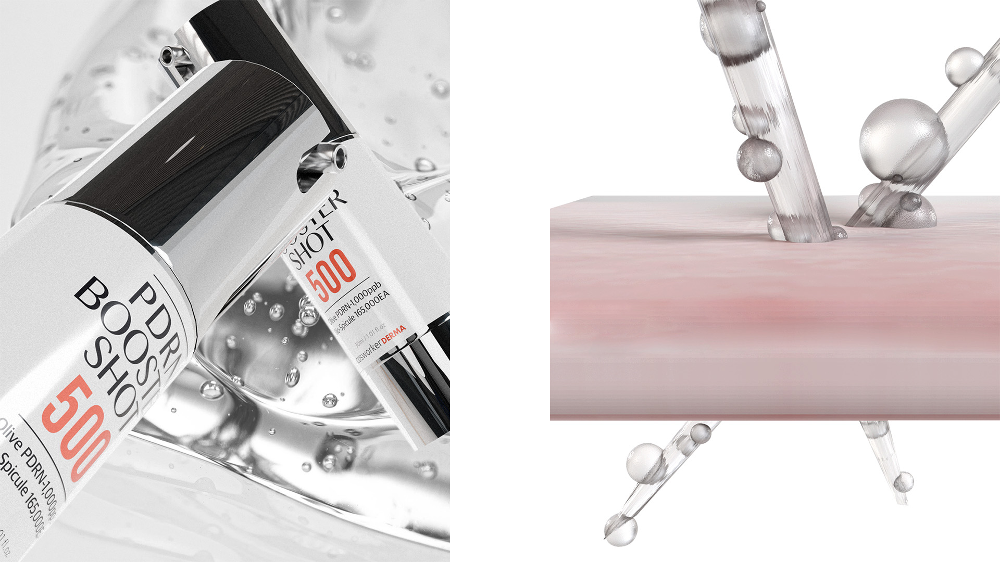
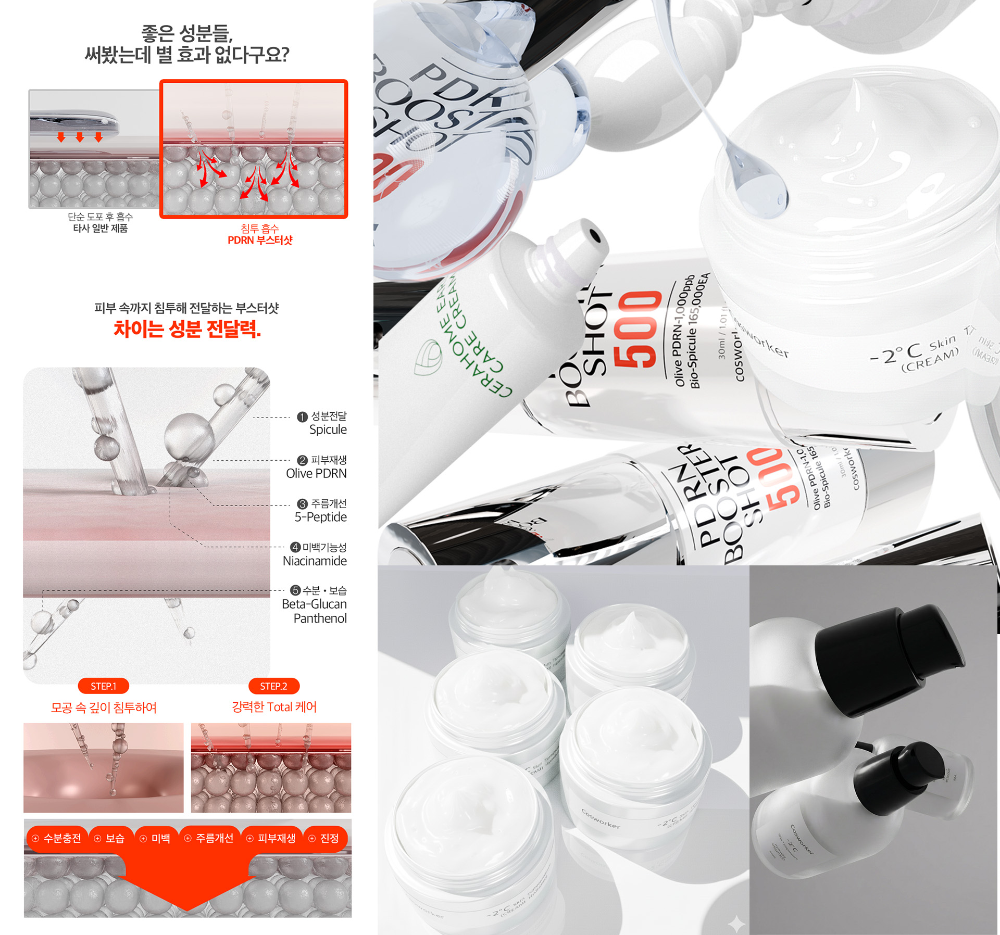
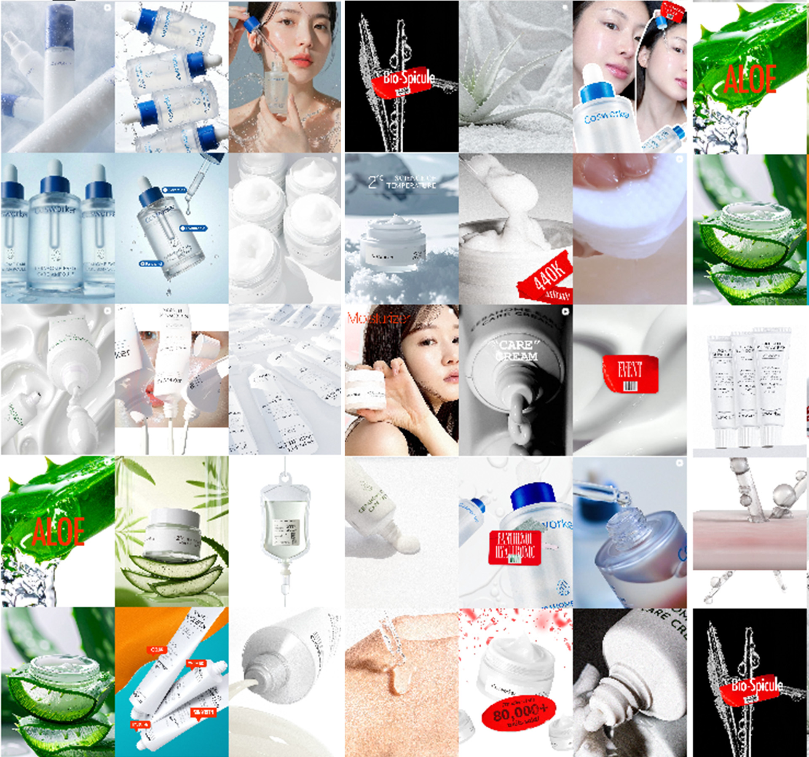
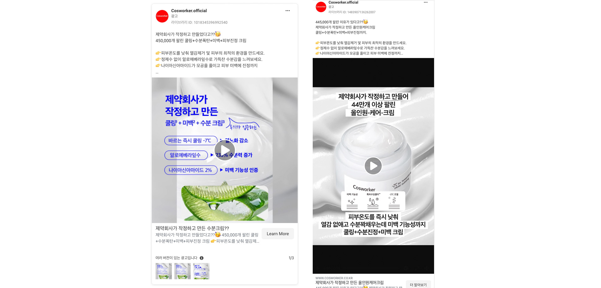

Background
COSWORKER(코스워커)는 (주)동일제약의 스킨케어 브랜드 입니다. 실제로 제품이 있고 브랜드가 런칭되었지만, 스마트 스토어만 개설되어 제품만 등록되어 있는 상태였고, ODM, OEM을 위한 포트폴리오로만 활용되는 브랜드였습니다.
Our Solution
01. 브랜드 구축
코스워커의 메시지를 단순화 시키고 톤앤 매너를 구축하였습니다. 자사몰을 구축하고, 고객의 구매 여정을 체크하고, 3D 작업으로 USP를 제작하는 등, 상세페이지를 고도화 하였습니다.




02. 가설 기반의 소재 A/B 테스트
'기능 강조형','공감 유도형','비주얼 강조' 등 가설을 세우고 총 14종의 제품을 시장에 테스트했습니다.
- 집중할 제품 선정: 전환 가치의 중점으로 가능성 제품을 선별
- 컨텐츠 고도화: 다양한 관점으로 컨텐츠를 제작후, 데이터 분석을 통해 위닝 소재 선별


03. 신규 플랫폼 'Thread' 의 활용
뷰티쪽에서 인플루언서 마케팅은 필수요소라고 판단했으나, 과포화 시장이 된 공동구매나, 인플루언서 시딩으로 인한 전환 만들기는 작은 신규 브랜드 로써는 쉽지 않았습니다.
- Thread 환경 분석: 'Thread'에서는 인플루언서들 만의 네트워크가 구성되고, 영상이나 이미지가 아닌 사실정보로써 컨텐츠가 확산되고 이슈가 되는 생태계 알고리즘을 파악하고, 관련 내용에 기반하여 시딩작업을 시작했고, 자체 프로모션을 연계하여 진행하였습니다
- 프로모션 결과: 자사몰 기준 일매출 3000만원+ 달성
- 사후관리: 지속적인 소통을 통해 유대관계를 형성하고, 3개월 단위의 프로모션으로 로열티와 CRM을 통한 지속적인 매출구조를 구축하였습니다.
What We Achieved
광고 전환 비용(CPA)
클릭률(CTR)
최종 ROAS 달성
한정된 예산이기에( META 평균 일 20만원 집행) 예산을 집중할 제품을 선별하고 위닝소재를 만들어 최적화를 진행하였고 일 평균 100만원+ 의 매출 구조(메타-자사몰)를 구축하였습니다.